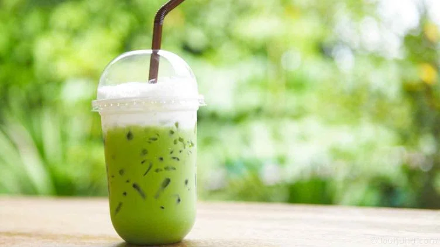

Green Thai Tea Recipe
Posted on Nov 15, 2024
- 2 cups water
- 2 tablespoons green tea leaves
- 2 cardamom pods, crushed
- 1 stick cinnamon
- 2 tablespoons sugar (or to taste)
- 1/2 cup evaporated milk or coconut milk
- Ice cubes (optional)
Instructions
- Bring 2 cups of water to a boil in a medium-sized pot.
- Add green tea leaves, crushed cardamom pods, and the cinnamon stick to the boiling water.
- Reduce the heat and let the mixture simmer for 5 minutes to allow the flavors to infuse.
- Strain the tea into a heat-safe container to remove the tea leaves and spices.
- Stir in the sugar while the tea is still hot, adjusting to your preferred sweetness.
- Let the tea cool slightly, then pour it into a glass.
- Add the evaporated milk or coconut milk and stir well.
- Serve warm, or pour over ice cubes for a refreshing cold drink.